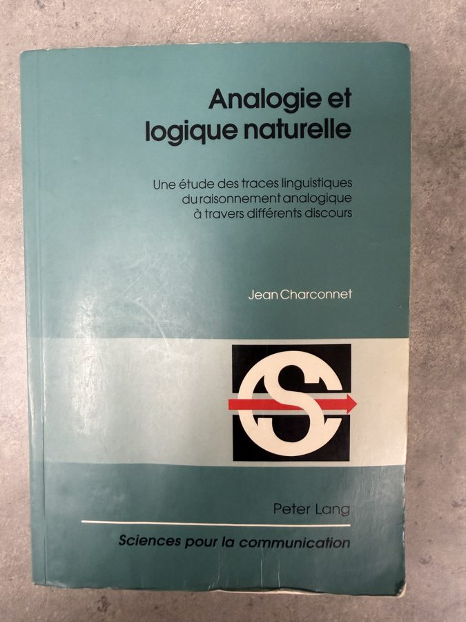

Une histoire vraie — celle d'une thèse, d'une lettre, et de ce qu'elles sont devenues.
À ceux qui ont gardé ce manuscrit vivant.

Ce livre a traversé les vents de sable de Mauritanie, les inondations de Thaïlande et les séismes du Vanuatu. Il revient aujourd'hui discuter avec l'intelligence artificielle.
De cette histoire est né un outil : un analyseur qui applique les mêmes opérations logico-discursives — pour repérer, aujourd'hui, les analogies que fabriquent les intelligences artificielles.
Ouvrir l'analyseur Télécharger la thèse (PDF)